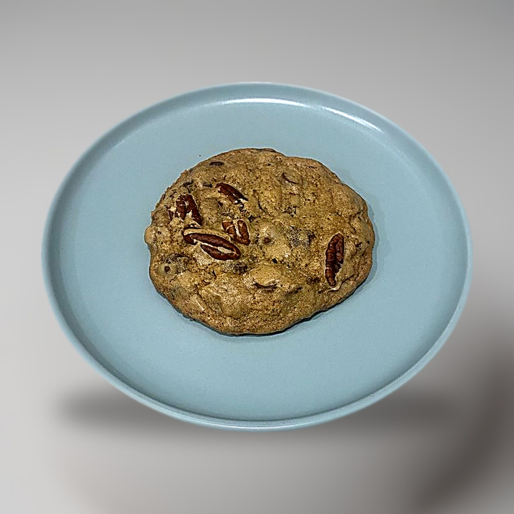

Baking / Chocolate chip cookies
Professional Chocolate Chip

- Yield
- 18 cookies
- Rest
- 1 h after scooping
- Oven
- 325F, 15-18 min
- Source
- Anna Olson
Scorecard
3/5Appearance
3/5Texture
3/5Flavor
easyTechnique
3/5Overall
Ingredients
Batch
- Unsalted butter, room temperature: 115 g
- Light brown sugar, packed: 100 g
- Granulated sugar: 100 g
- Egg, room temperature: 1
- Vanilla extract: 5 ml
- All-purpose flour: 185 g
- Cornstarch: 7.5 g
- Baking soda: 2.5 g
- Salt: 2.5 g
- Chocolate chips: 262 g
- Pecans, toasted and chopped: 100 g, optional
Method
- Cream the butter with both sugars 3 to 4 minutes until light and fluffy.
- Beat in the egg and vanilla.
- Sift together flour, cornstarch, baking soda and salt, then stir in until just blended.
- Fold in the chips and toasted pecans.
- Scoop about 2 tbsp portions, roll into balls.
- Chill the scooped dough at least 1 hour, which is what stops them spreading.
- Bake at 325F for 15 to 18 minutes, 7.5 cm apart, until browned at the edges.
- Cool completely on the tray.
Notes
- Lowest oven of the set at 325F, so the edges do not run ahead of the centres.
- Freezes scooped. Thaw 20 minutes before baking.
Learnings
Lowest scoring of the five made, a flat 3 on all of appearance, texture and flavor. Easy to make, but nothing here beats the higher-rated ones, so this is the one to drop first.